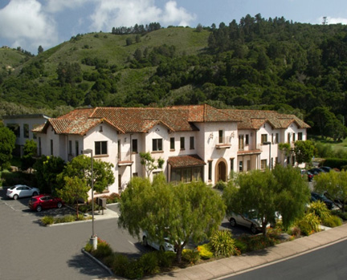

About Us
Kennedy, Archer & Giffen provides legal services in the areas of real estate and commercial transactions, business and nonprofit organizations, and civil litigation. The attorneys at Kennedy, Archer & Giffen represent a history of legal practice in Monterey County that stretches back more than forty-fiveyears, and a breadth of experience drawn from the nation’s leading law firms. The firm is committed to superior service and practical problem-solving, with the goal of combining excellent legal skills with solid business judgment in order to play an active role in helping its clients succeed. The firm began in 1997, formed by Nolan Kennedy and Dan Archer, each of whom began his practice with the Monterey office of Hoge, Fenton, Jones & Appel. In 2001, they were joined by Jon Giffen, who had practiced civil defense litigation at the law firm of Ropers, Majeski, Kohn & Bentley in San Francisco, prior to moving his practice to Salinas in 1996. In 2014, Crystal Gaudette joined the firm after practicing for eight years at Wilson Sonsini Goodrich & Rosati in Palo Alto.Kennedy, Archer & Giffen continues to grow, adding transactional lawyers and litigators to strengthen its legal service capabilities.
